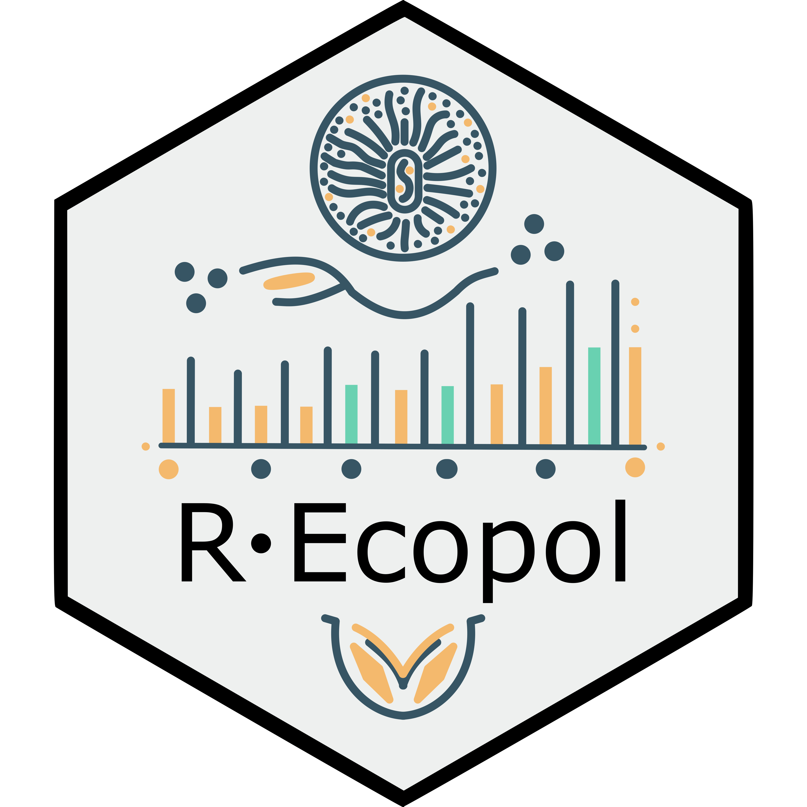

Projects
Ondřej Mottl
Projects
Overview of projects
BIODYNAMICS
About me
CV
List of publications
Work with me
Get in touch!
Collaboration guide
Code Convention
On this page
Active Projects
Past Projects
Software and R-packages
Projects
Projects, in which I am actively participating.
Active Projects
BIODYNAMICS
BIODYNAMICS is a 3-year personal research project, for which I have received funding by the Czech Science Foundation (GACR), and started on 1.6.2023.
PPF-Alpine
The Past, Present and Future of Alpine Biomes Worldwide
(PPF-Alpine) aims to take a deep dive into the biogeographical history of alpine systems on a global scale and decipher the drivers of present-day alpine biodiversity.
No matching items
Past Projects
HOPE
Humans on Planet Earth
- Long-term impacts on biosphere dynamics (HOPE) is a 5.5-year European Research Council Advanced Grant project running from 1 January 2018 to the end of 2023. It addresses a critical question in Earth system science - what was the impact of prehistoric people on the biosphere and its dynamics?
No matching items
Software and R-packages
RRatepol
FOSSILPOL

REcopol
RUtilpol
No matching items
BIODYNAMICS